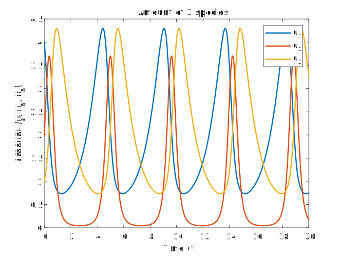
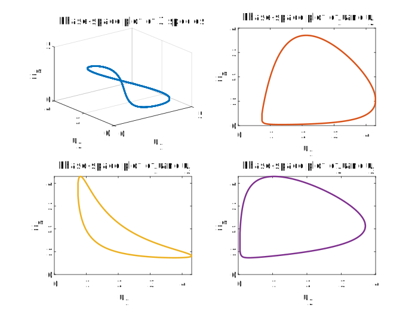

本篇讲述了如何应用 MATLAB 对三种群的 Lotka-Volterra 模型进行模拟并可视化
几种基本的种群动力学模型
单种群模型
Malthus 模型
假设种群数量 是时间 的连续可微函数, 种群的出生率与死亡率之差 为常数, 即
令 , 就得到 Malthus 模型
容易解得
由 可知, 种群数量按指数规律无限增长。而现实中的种群由于受到生存空间等种种约束不可能无限增长, 因此, Malthus模型必须进行修正
Logistic 模型
假设种群在空间内均匀分布, 种群中所有个体不分大小都相同, 世代重叠, 没有迁出和迁入, 种群大小 (数量或密度) 是连续可微函数. 则 的动态变化就可用动力学方程
描述
在 成立的条件下, 资源的供给始终为常数, 且对每个个体的分配是均等的. 当种群规模 (数量或密度) 增大时, 每个个体资源的平均分配量必然减少, 从而使种群规模的增长率 减少. Verhulst 假设种群规模的相对增长率 是种群的线性减少函数, 从而得到 Logistic 模型
其中
- 为种群的内禀增长率, 反映了物种内在的特性
- 反映了资源丰富的程度, 当 时, 种群的规模不再增大. 因而 表示环境能容纳此种群个体的最大规模, 称为环境容纳量
多种群模型
同一自然环境中, 经常有多种生物共存, 对相互影响非常大的生物种群, 我们无法割裂开来单独讨论, 故必须弄清楚它们之间相互关系, 一起进行研究, 这就导出了多种群的模型
两种群相互作用的 Lotka-Volterra 模型
用分别表示两种群在 时刻的数量或密度, 考察各自的相对增长率 , , 由于我们需要考虑到种群内自身发展规律和种群间相互作用的影响两个方面, 故两种群相互作用的模型常用形式是
其中
- 分别表示各种群自身的相对增长率
- 分别表示另一种群对这一种群的影响
这四个函数根据具体对象和环境确定
若假设 都是线性的, 则得到两种群相互作用的 Lotka-Volterra 模型
其中
分别是种群 的内禀增长率, 其正负由它们各自的食物来源而确定
以 为例, 当 的食物是 以外的时候, ; 当 的食物仅有 的时候,
是反映种内竞争的参数, 故
是反映种群间相互作用的参数, 一般分为如下情况:
- 互利共生型：
- 捕食型: 当 以 为食时,
- 竞争型:
三种群相互作用的 Lotka-Volterra 模型
我们可以用同样的方法得到三种群相互作用的Lotka-Volterra模型, 即
其中
参数含义同上
微分方程数值解法
求微分方程
数值解的基本思想如下:
考虑 在 处的 Taylor 展开
称 为区间 上的平均斜率, 记作
根据 选取方式的不同, 我们有如下数值算法:
Euler方法: 取
改进的 Euler 方法: 取
Runge-Kutta方法: 在区间 中取若干个点, 将其斜率的加权平均和作为
一般最常用的算法是四阶 Runge-Kutta 方法, 即:
本篇采用了 Euler方法和四阶 Runge-Kutta 方法进行计算
MATLAB 程序实现
主程序
Show code
main.m 1
2
3
4
5
6
7
8
9
10
11
12
13
14
15
16
17
18
19
20
21
22
23
24
25
26
27
28
29
30
31
32
33
34
35
36
37
38
39
40
41
42
43
44
45
46
47
48
49
50
51
52
53
54
55
56
57
58
59
60
61
62% Parameters
a0 = [1; 0; -1];
A = [0, -0.8, -0.2; 0.8, 0, -0.8; 0.2, 0.8, 0];
n = 4e6; h = 1e-5;
% Initial value
u_start = [4; 2; 1];
% Time
t = 0:h:((n - 1) * h);
% Euler's method
% Faster but less accurate
u_ans = euler_solve(u_start, a0, A, h, n);
% RK4 method
% More accurate but slower
% u_ans = rk4_solve(u_start, a0, A, h, n);
% Amount plot
figure;
plot(t, u_ans(:, 1), 'linewidth', 1.5);
hold on
plot(t, u_ans(:, 2), 'linewidth', 1.5);
plot(t, u_ans(:, 3), 'linewidth', 1.5);
xlabel('Time (t)');
ylabel('Amount (u_1, u_2, u_3)');
legend('show');
legend('u_1', 'u_2', 'u_3')
title('Amount of 3 species')
% Phase-space plot
figure;
subplot(2, 2, 1);
plot3(u_ans(:, 1), u_ans(:, 2), u_ans(:, 3), 'linewidth', 1.5);
grid on
title("Phase-space plot of 3 species");
xlabel('u_1');
ylabel('u_2');
zlabel('u_3');
subplot(2, 2, 2);
plot(u_ans(:, 1), u_ans(:, 2), ...
'color', [0.8500 0.3250 0.0980], ...
'linewidth', 1.5);
title("Phase-space plot of u_1 and u_2");
xlabel('u_1');
ylabel('u_2');
subplot(2, 2, 3);
plot(u_ans(:, 1), u_ans(:, 3), ...
'color', [0.9290 0.6940 0.1250], ...
'linewidth', 1.5);
title("Phase-space plot of u_1 and u_3");
xlabel('u_1');
ylabel('u_3');
subplot(2, 2, 4);
plot(u_ans(:, 2), u_ans(:, 3), ...
'color', [0.4940 0.1840 0.5560], ...
'linewidth', 1.5);
title("Phase-space plot of u_2 and u_3");
xlabel('u_2');
ylabel('u_3');Euler 方法
Show code
euler_solve.m 1
2
3
4
5
6
7
8
9
10
11
12
13function output = euler_solve(u_start, a0, A, h, n)
u_curr = u_start;
res = zeros(n, size(u_start, 1));
res(1, :) = u_start;
for i = 2:n
u_next = u_curr + h .* u_curr .* (a0 + A * u_curr);
res(i, :) = u_next;
u_curr = u_next;
end
output = res;
end四阶 Runge-Kutta 方法
Show code
rk4_solve.m 1
2
3
4
5
6
7
8
9
10
11
12
13
14
15
16
17function output = rk4_solve(u_start, a0, A, h, n)
u_curr = u_start;
res = zeros(n, size(u_start, 1));
res(1, :) = u_start;
for i = 2:n
k1 = h .* u_curr .* (a0 + A * u_curr);
k2 = h .* (u_curr + 1/2) .* (a0 + A * (u_curr + k1 / 2));
k3 = h .* (u_curr + 1/2) .* (a0 + A * (u_curr + k2 / 2));
k4 = h .* u_curr .* (a0 + A * (u_curr + k3));
u_next = u_curr + (k1 + 2 * k2 + 2 * k3 + k4) / 6;
res(i, :) = u_next;
u_curr = u_next;
end
output = res;
end
效果
以
为例
种群数量随时间的变化

相空间图
